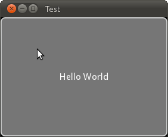
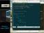
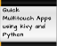

Kivy - Open source Python library for rapid development of applications
that make use of innovative user interfaces, such as multi-touch apps.
Cross platform
Kivy is running on Linux, Windows, MacOSX, Android and IOS. You can run the same code on all supported platforms.
It can use natively most inputs protocols and devices like WM_Touch, WM_Pen, Mac OS X Trackpad and Magic Mouse, Mtdev, Linux Kernel HID, TUIO. A multi-touch mouse simulator is included.
Business Friendly
Kivy is 100% free to use, under LGPL 3 licence. The toolkit is professionally developed, backed and used. You can use it in a product and sell your product.
The framework is stable and has a documented API, plus a programming guide to help for in the first step.
GPU Accelerated
The graphics engine is built over OpenGL ES 2, using modern and fast way of doing graphics.
The toolkit is coming with more than 20 widgets designed to be extensible. Many parts are written in C using Cython, tested with regression tests.
Be social !
|
|
Usage example
See how easy it is to create a simple Hello World application that just shows an actionable button:
from kivy.app import App
from kivy.uix.button import Button
class TestApp(App):
def build(self):
return Button(text='Hello World')
TestApp().run()
Result
Download
The current version is 1.5.1, released on December 13th, 2012. Read the Changelog.
| Operating System | File | Instructions | Size |
|---|---|---|---|
| Windows Seven (32/64 bits) | Kivy-1.5.1-w32.zip | Installation for Windows | 72.7 Mb |
| Mac OS X 10.7, 10.8 (require Python 2.7) | Kivy-1.5.1-osx.dmg | Installation for MacOSX | 43.6 Mb |
| Linux (tested Ubuntu > 11.04, 32/64bits, Maegia, Arch) | Kivy-1.5.1.tar.gz | Installation for Ubuntu | 12 Mb |
 Ubuntu PPA
Ubuntu PPA
|
Kivy stable PPA | How to use software from PPA | 12 Mb |
| Opensuse |
One-Click-Installation for Factory
|
No documentation available | Unknown |
| Fedora | No documentation available | Unknown | |
| Fedora | No documentation available | Unknown | |
| Android (>= 2.2, with OpenGL ES 2) | Kivy Laucher 1.5.1 ( APK ) | Packaging for Kivy Launcher | 13 Mb |
| Meego | Kivy COBS Packages | 12 Mb |
Android
Demo examples are published on the Android market:
Create you own APK by following the documentation about Packaging for Android
IOS
We haven't published our demos, but the winner of Kivy game contest #1 have been packaged for IOS: Deflectouch on iTunes.
Read the documentation about Packaging for IOS
Source code
git clone http://github.com/kivy/kivy
Take a look at our instructions on Installation of Development version.
Community Support
- Read our documentation
- Report a bug or request a feature in our issue tracker
- Ask you questions on the Kivy users forums
- Or send a mail at kivy-users@googlegroups.com
You can also try to contact us on IRC (online chat), but make sure to read the IRC rules before connecting. Connect to Webchat
Commercial Support
Available soon.
Licenses
Kivy logo have been done by
Vincent Autin. The logo is placed under

All the screenshots on the website that came from the Kivy's examples are under the Public Domain.
All the screenshots in the Gallery are from their respective owners. Contact them first if you want to use the content.
About us
Kivy is a community project, led by professional software developers. We are responsible for developing and supporting Kivy, alongside of the community. We also work for companies that use Kivy for their professional products.
- Core developers
-
-
 He became a programming expert from working in IT for years before starting with Kivy. He's French, and founded Melting Rocks.
He became a programming expert from working in IT for years before starting with Kivy. He's French, and founded Melting Rocks.
On IRC, he's tito. -
He holds a BSc in Computer Science, pursues a PhD and co-founded fresk, a company using Kivy. He lives in the US.
On IRC, he's hansent. -
Gabriel PettierHe is graduating as an Information Systems engineer while doing internship in a free software service company. He lives in France.
On IRC, he's tshirtman. -
 He's a hobbyist who likes to code for fun. He's from India.
He's a hobbyist who likes to code for fun. He's from India.
On IRC, he's qua-non. -
He is a mobile/web developer for Gitwit Creative, a US-based product development firm.
On IRC he's knapper_tech. -
 Edwin MarshallHe's a communication student from the US who contributes to various open-source Python projects in his free time.
Edwin MarshallHe's a communication student from the US who contributes to various open-source Python projects in his free time.
On IRC, he's aspidites. -
 He received a Ph.D. in geology/paleontology, and taught college for years before focusing more on programming. He lives in Louisiana. His website is geojeff.org.
He received a Ph.D. in geology/paleontology, and taught college for years before focusing more on programming. He lives in Louisiana. His website is geojeff.org.
On IRC, he's geojeff.
-
- Contributors
-
-
Terje Skjaeveland (bionoid)
-
George Sebastian (georgs)
-
Gabriel Ortega
-
Arnaud Waels (triselectif)
-
Thomas Hirsch
-
Joakim Gebart
-
Rosemary Sebastian
-
Jonathan Schemoul
-
- Special thanks to
-
- Mark Hembrow, who is one of our first sponsor, by giving us a Mac Mini. Which is currently used for all the build system: unit test on Windows / MacOSX and Ubuntu + building the HTML and PDF documentation.
- Christopher Denter (dennda) who was a core-developer in the first stage of the project. He contributed a lot by improving the documentation, implementing the Kivy extension system, pep8 hook and fixes, spelling provider. He also did 1 GSOC on the previous PyMT framework on implementing a virtual keyboard with a better navigation.
- Vincent Autin for his work as a designer for the project, specially on the logo !
Many people have contributed to Kivy and we're always interested in growing our community. If you want to help in terms of writing code, improving documentation, testing, etc. or simply making a donation, please do not hesitate to contact us!
Talks
Here is a list of talks about Kivy. (if you have made a talk, don't hesitate to share it!)
-

 OpenGL and Python on computer and embed devices
(slides)
OpenGL and Python on computer and embed devices
(slides)
24 July 2012 - Mathieu Virbel
EuroPython 2012 in Florence, Italia. -
 Kivy - Python UI Library for Any OS
Kivy - Python UI Library for Any OS
28 April 2012 - Rokas Aleksiūnas
PyCon LT 2012 in Vilnius -
 NIU en Python: Kivy
NIU en Python: Kivy
(Starting at 2:28:00 in the video)
28 November 2011, Gabriel Pettier
La Cantine in Paris, France -
Spaß mit Natural User Interfaces und Python
October 2011 - Ernesto Rico Schmidt
PyCon DE 2011 -

Quick Multitouch Apps using Kivy and Python
September 2011 - KP Singh (kpsfoo), N Chadha
PyCon India 2011 -
 GLES2 Python framework for NUI
GLES2 Python framework for NUI
19 July 2011 - Mathieu Virbel
RMLL 2011 in Strasbourg, France -
Lightning talk about Kivy
22 June 2011 - Mathieu Virbel
Europython 2011 in Florence, Italia